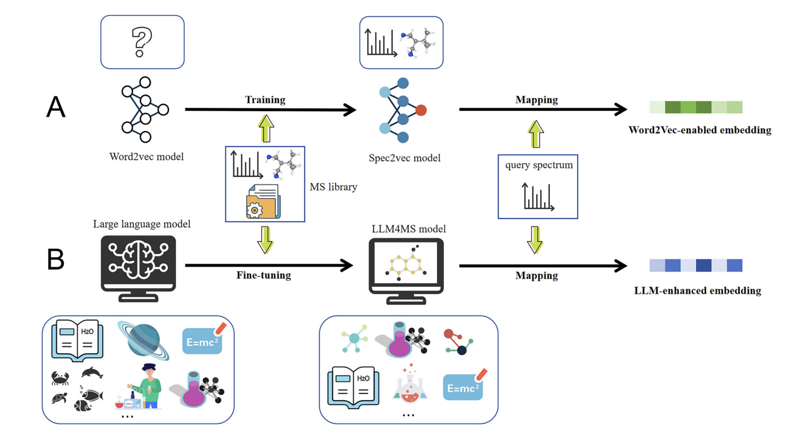

|
Wei-Jie Xu Currently I am a master student of School of Artificial Intelligence in Nanjing University and a member of LAMDA group, led by Prof. Zhi-Hua Zhou. In June 2024, I received my B.Eng. degree from School of Computer Science and Technology, Soochow University. In the same year, I was admitted to study for a master's degree in School of Artificial Intelligence, Nanjing University under the supervision of Prof. Kai Ming Ting. Email / Github / Google Scholar / DBLP |

|
News
- [Nov.2025] One paper about Efficient Reasoning(TIV) has been accepted by AAAI2026 !
- [Oct.2025] Spend three wonderful months in Alibaba.
- [Aug.2025] One paper about AI4Sci(LLM4MS) has been accepted by Communication Chemistry (SCI I) !
- [Aug.2025] One paper about Efficient Model(PIP) has been accepted as Findings of EMNLP2025 !
- [Jul.2025] Start an Internship in Alibaba.
- [Jan.2025] Release one paper about Efficient Model(PIP).
- [Nov.2024] Release one paper about Spectral Clustering(DBSC).
- [Oct.2024] Release one paper about Spectral Clustering(D-Spec).
- [Sep.2024] Enroll as a master student in Nanjing University.
Research
Research is driven by curiosity and enjoyment, though practical implications may emerge. I have varying degrees of interest in all aspects of artificial intelligence.

We propose PIP (Perturbation-based Iterative Pruning), a method that iteratively prunes parameters based on the distinction between unperturbed and perturbed views, optimizing large language models. Experimental results show that PIP reduces parameter count by approximately 20% while retaining over 85% of the original accuracy, outperforming existing state-of-the-art pruning methods across various benchmarks.

We propose LLM4MS, a method that leverages expert knowledge from large language models to generate discriminative spectral embeddings for improved compound identification. Experimental results show a 13.7% improvement in accuracy over existing methods on a million-scale library, with a query speed of nearly 15,000 queries per second.
Award
- New Point Software Scholarship,[link],2021-2022, School of Computer Science and Technology, Soochow University.